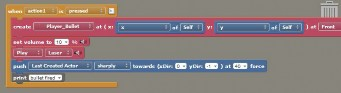

White Box Testing - [Unit 22 M3]
Player Movement
In order to test the players ability to move around I put a debug output into the code for the movement on the selection points for moving left and right and then tested it. I also tried pressing other keys that aren’t supposed to effect the movement
Here is the log viewer from after I loaded the game and moved the player left and right a bit this log is correct because it shows that moving left and right works fine when the player presses the correct keys but also that is doesn’t move when it’s not supposed to.
Player Firing
In order to test the players ability to fire I have put a debug output under the key stroke for firing a bullet which will only fire after the player has pressed the key and the bullet has actually fired. Other keys were pressed to check if it was otherwise effected

This is the log for after I pressed the fire key a few times this log is correct because it triggers the bullet fired when I press the spacebar but doesn’t when I press other unused keys

Enemy firing
This is the code for the enemy firing and I have added debug print points to determine which path the code is taking and to check if it is working correctly. For this the output should be that the enemy fires at the slower speed while the players score is less than 100 which in this test it was.
Enemy hit and killed
These segments of this code handle the enemy robots getting hit by the player’s bullets as well as the enemy getting killed after losing all its health as the enemy gets hit it should output that it’s been hit to the logs and state that it’s been killed when you hit it all the times.
UFO fire and killed
This code block is used to handle the timing for the ufo firing bullets
This block is used to handle the death of the ufo and should only trigger once when the enemy is actually killed.
This log is correct because while I was testing the game I hit 2 different enemies and therefore there are more than 4 hit messages but I only killed one of the enemies and therefore there is only one killed event occurring.
UFO Scoring
I have added a debug output to show the score after the score is supposedly inc5reased after you kill the UFO and therefore you should see that after the UFO is killed the score is set to 20 as I will start with a score of 0
After killing the UFO you can see that the score is actually set to 20 and therefore the test was successful and the score is only increased after you kill the UFO not as you hit it.
Enemies Scoring
This code is used when the enemy is killed and therefore I have added the score viewer debug code into just after the score is supposedly increased. With a starting score of 0 every time I kill an enemy I should get +1 score.
This log is correct because each kill I get on the enemies I get a score that is one higher than the previous score that I had.
Test data to be entered | |
testing the start button | click start button |
testing controls button | click controls button |
testing about button | click about button |
testing exit button | click the exit button |
Testing moveing to the left | left key |
testing moveing to the right | right key |
testing the player stopping | not pressing left or right |
Testing Moving to the right | d key |
Testing fireing bullets | space key |
Testing fireing bullets | m key |
testing getting hit | hit by enemy |
testing hitting the enemies | bullet hits enemy |
testing all enemies dead | kill all enemies |
score board testing | kill enemy |
lives display testing | get hit by enemy |
player runs out of lives | getting hit by enemy 3 times |
enemy fires bullet | wait for bullet to fire |
Testing enemy movements | wait for enemies to move |
Bullet hits barracade | fire at barracade |
When points reaches 100 | get 100 points |
testing moveing upwards | up key |
testing moveing downwards | not pressing up key |
testing fireing bullet | space key |
Testing fireing bullets | m key |
enemy fires bullets | wait for bullet to fire |
when hit health decreases | wait to get hit by enemy |
when enemy hit by bullet | fire at enemy |
when enemy killed move to main screen | kill enemy |
Testing enemy movements | wait for ufo to move up and down |
Displays score on page | Die on main level and see if score comes up |
testing back button | click on back button |
Expected outcome
[Unit 22 P5]
moves to main level |
moves to controls page |
moves to about page |
exits the game |
Black Box Testing - First Round Main Menu
Main Level
ship moves left |
ship moves right |
ship stops |
Ship doesn’t move |
ship fires |
Ship doesn’t fire |
playership flashes and health decreases by one |
enemy ship flashes and its health decreases by one |
moves to minigame scene |
score board changes by 1 |
lives decreases by one |
player dies and moves scene to end game screen |
bullet fired |
enemies move back and forth as well as down slowly |
barricade partition destroyed |
enemies fire super quickly |
Mini Game
ship moves up |
ship moves down |
bullet fired |
Ship doesn’t fire |
bullet fired |
player dies and moves scene to end game screen |
enemy UFO flashes and its health decreases |
move to main level scene |
enemy moves up and down randomly |
score displayed on screen changes to main menu scene

End Screen
Actual outcome
moves to main level |
reloads the main menu |
reloads the main menu |
exits the game |
ship moves left |
ship moves right |
ship stops |
Ship doesn’t move |
ship fires |
Ship doesn’t fire |
player ship flashes and health decreases by one |
enemy ship flashes and its health decreases by one |
moves to minigame scene |
score board changes by 1 |
lives decreases by one |
player dies and moves scene to end game screen |
bullet fired |
enemies move back and forth as well as down slowly |
barricade partition destroyed |
yet untested |
ship moves up |
ship moves down |
bullet fired |
Ship doesn’t fire |
bullet fired |
player dies and moves scene to end game screen |
enemy UFO flashes and its health decreases |
level reloads on mini game |
enemy moves up and down randomly |

score displayed on sceen changes to main menu scene
Discrepancy (What went wrong?)
doesn’t move to correct page doesn’t move to correct page
yet untested
reloads instead of going to main level again